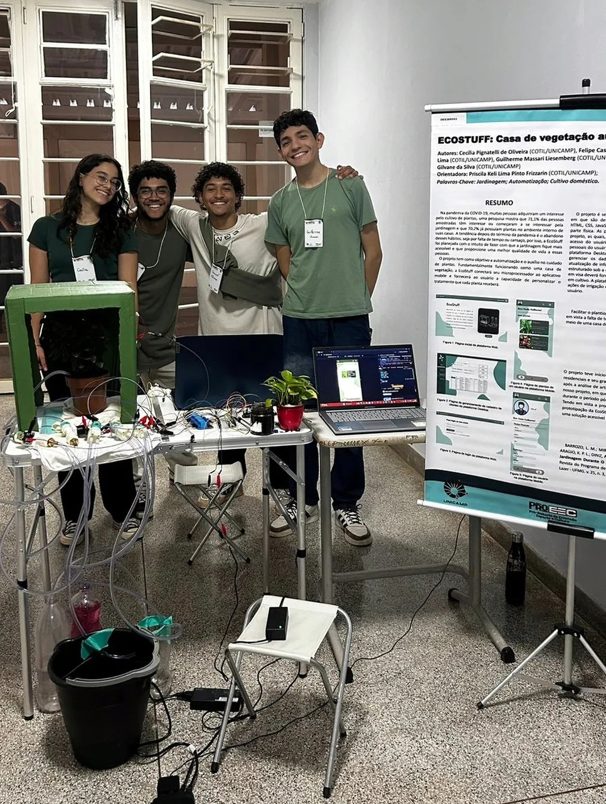
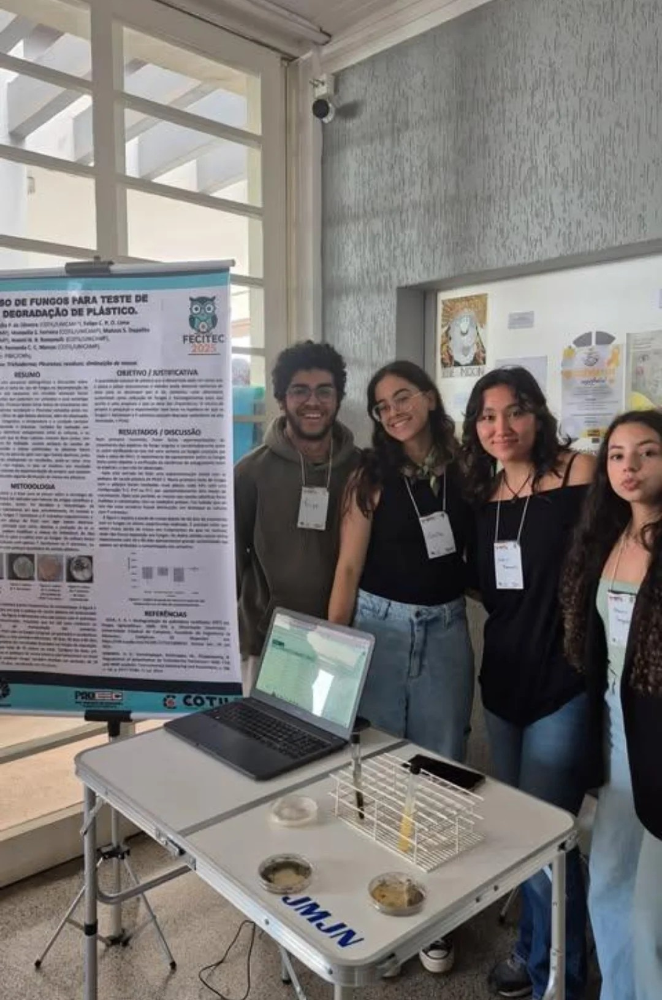
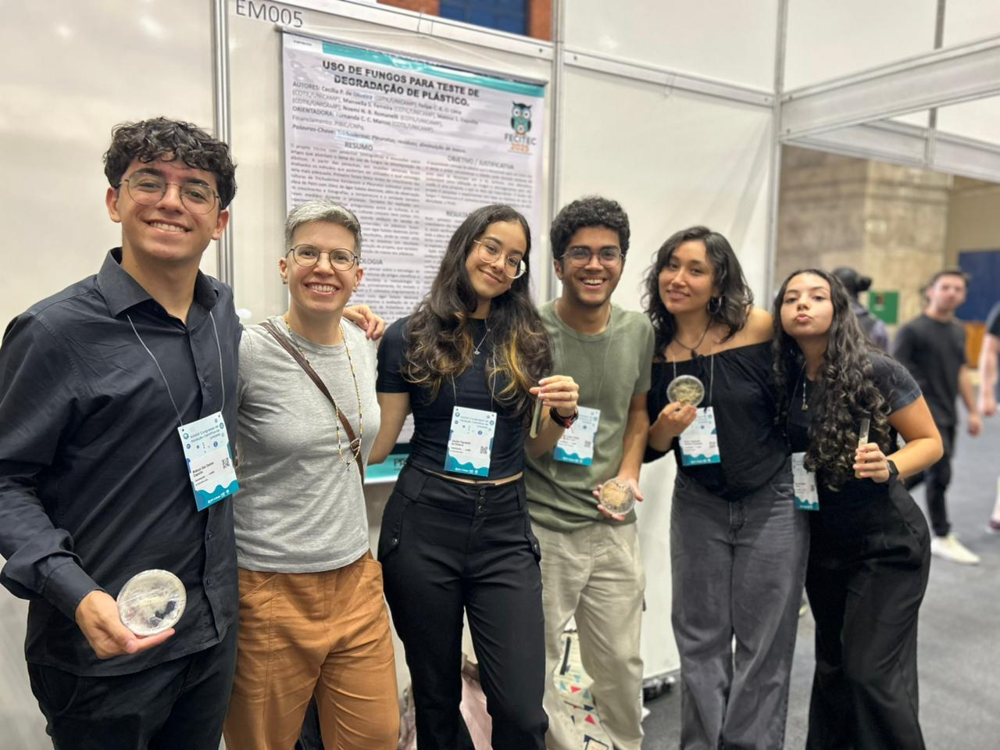
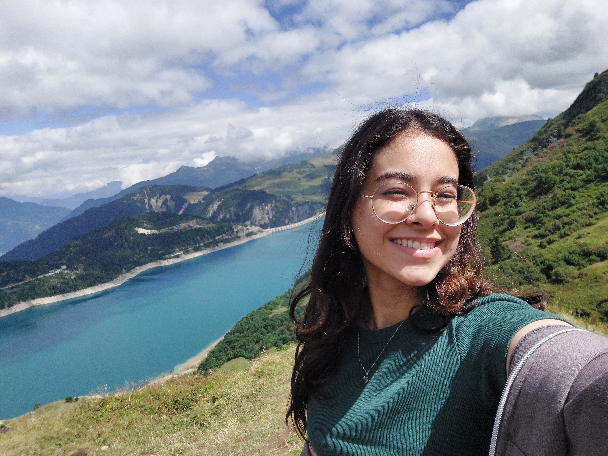
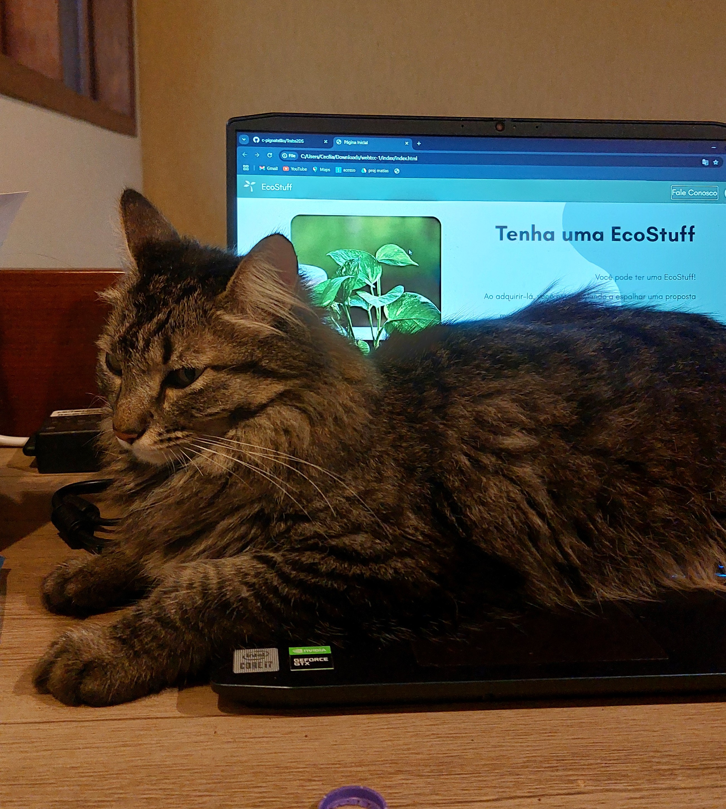
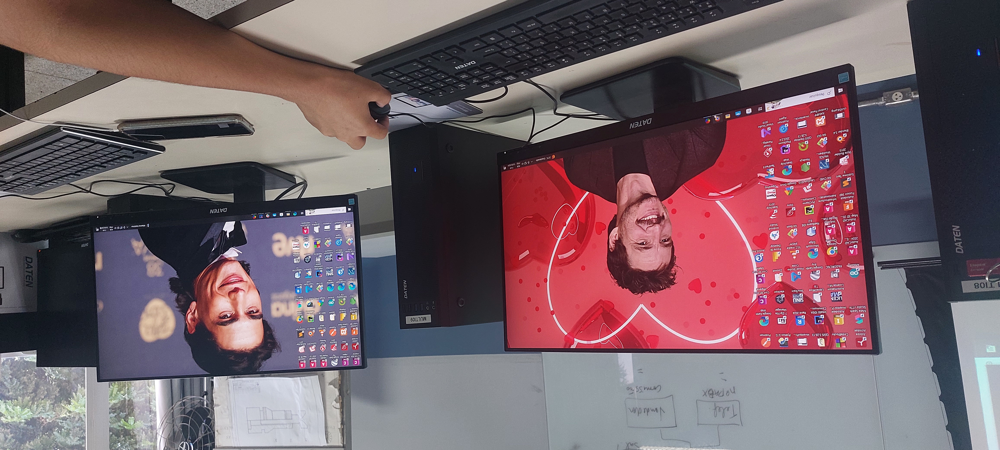

Oie! Meu nome é Cecília e eu sou bixete de BCC. Eu sou de Campinas e cresci a duas quadras
da Unicamp, ironicamente. Durante o ensino médio, eu fiz um curso técnico de desenvolvimento de sistemas no Cotil,
Colégio Técnico de Limeira, da Unicamp (também ironicamente). É até surpreendente que eu vim parar na Usp e em outra
cidade.
Durante o meu curso técnico, eu aprendi linguagens como C, Java, HTML, CSS, PHP, JavaScript, C#, Flutter, e outras ferramentas
da computação, como o Github, Spring, banco de dados, Arduino, Power BI, etc. Confesso que são várias coisas, mas não me peça pra lembrar
nada sem muita prática rsrs.
Nos dois últimos anos do curso, fiz, junto com três colegas, um
projeto integrador que envolvia áreas de Web, Mobile e Desktop, além de uma plataforma física desenvolvida com ESP-32. O projeto foi
apresentado na feira de ciências do Cotil, para duas bancas avaliadora e na Exposição do Cotuca em 2025.
Veja um pouco mais do nosso projeto EcoStuff aqui.
Confesso que, por causa da minha função principal no projeto em Web, essa é a área que eu tenho mais afinidade
neste momento, mas nada que um pouco de prática nas outras áreas não possa resolver. Este projeto foi bastante divertido de fazer,
até mesmo pra recuperar minhas habilidades que ficaram paradas durante os vestibulares.
Galeria de fotos

Grupo do projeto EcoStuff

Grupo da minha Iniciação Científica
Grupo da minha Iniciação Científica

Grupo da minha Iniciação Científica

Euu

Minha gata ajudando com o TCC

Brincadeiras divertidas no laboratório